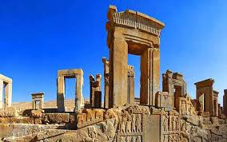
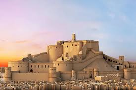
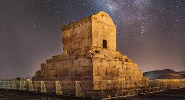
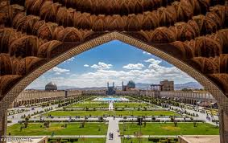

این بخش برای معرفی آثار و هنر ایران ساخته شده است.

تخت جمشید یکی از باشکوهترین آثار تاریخی ایران و جهان است که در دوران هخامنشیان و به دستور داریوش بزرگ ساخته شد. این مجموعه در نزدیکی شهر مرودشت در استان فارس قرار دارد و بهعنوان پایتخت تشریفاتی امپراتوری هخامنشی شناخته میشد. در تخت جمشید کاخها، ستونهای عظیم، نقشبرجستهها و پلکانهای سنگی دیده میشود که نشاندهندهی هنر، معماری پیشرفته و قدرت امپراتوری ایران باستان هستند. این بنا محل برگزاری مراسم مهم، جشنها و پذیرایی از نمایندگان کشورهای مختلف بوده است. تخت جمشید نماد شکوه، تمدن و عظمت ایران باستان است و امروز یکی از مهمترین میراثهای جهانی به شمار میرود

ارگ بم یکی از بزرگترین و قدیمیترین سازههای خشتی جهان است که در شهر بم، استان کرمان قرار دارد. قدمت این اثر تاریخی به دوران پیش از اسلام و حتی دوره هخامنشیان نسبت داده میشود و سالها بهعنوان یک شهر زنده و مهم مورد استفاده بوده است. این ارگ شامل بخشهایی مانند قلعه، خانهها، بازار، مسجد و برجهای نگهبانی بوده و با خشت و گل ساخته شده است. موقعیت آن در مسیر جاده ابریشم باعث شده بود که نقش مهمی در تجارت و ارتباطات منطقه داشته باشد. ارگ بم نماد معماری سنتی و زندگی شهری در ایران باستان است و با وجود آسیبهایی که در زلزله دیده، همچنان یکی از مهمترین آثار تاریخی و فرهنگی ایران محسوب میشود.

پاسارگاد یکی از مهمترین و نخستین پایتختهای امپراتوری هخامنشی است که به دستور کوروش کبیر ساخته شد. این مجموعه تاریخی در استان فارس قرار دارد و بهعنوان یکی از ارزشمندترین آثار باستانی ایران و جهان شناخته میشود. مهمترین بخش پاسارگاد، آرامگاه کوروش کبیر است که با طراحی ساده اما باشکوه خود، نماد احترام، عدالت و عظمت این پادشاه بزرگ به شمار میآید. همچنین در این مجموعه کاخها، باغها و سازههای سنگی دیده میشود که نشاندهندهی هنر و معماری پیشرفته ایرانیان باستان است. پاسارگاد نهتنها یک اثر تاریخی، بلکه نماد آغاز تمدن بزرگ هخامنشی و یکی از مهمترین میراثهای فرهنگی جهان است

میدان نقش جهان یکی از باشکوهترین و مهمترین آثار تاریخی ایران است که در شهر اصفهان قرار دارد و در دوره صفوی، به دستور شاه عباس اول ساخته شد. این میدان یکی از بزرگترین میدانهای تاریخی جهان به شمار میرود و بهعنوان مرکز سیاسی، فرهنگی و اجتماعی آن زمان استفاده میشد. اطراف میدان نقش جهان، بناهای بسیار مهمی مانند مسجد امام، مسجد شیخ لطفالله، کاخ عالیقاپو و بازار قیصریه قرار دارند که هرکدام شاهکاری از معماری ایرانی-اسلامی هستند. این مجموعه نشاندهندهی اوج هنر، معماری و تمدن دوره صفوی است. امروزه نقش جهان یکی از مهمترین جاذبههای گردشگری ایران و ثبتشده در فهرست میراث جهانی یونسکو است که سالانه گردشگران زیادی را از سراسر جهان جذب میکند.
از گذشته تا کنون ایران